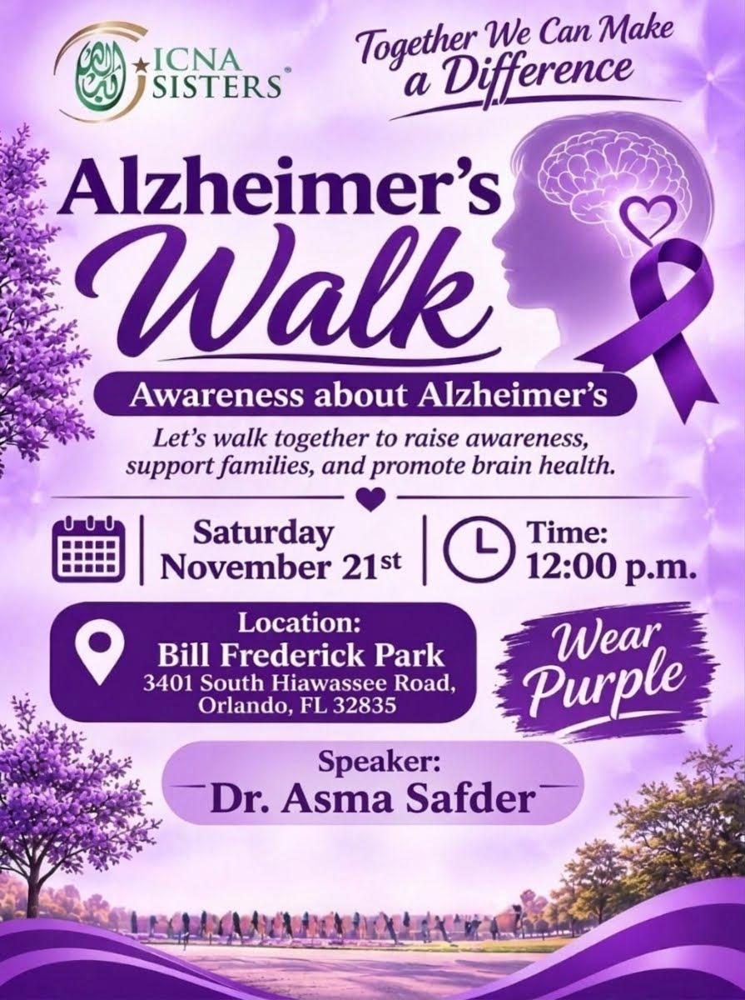

ICNA Sisters · Speaker: Dr. Asma Safder
Alzheimer's Walk
- When
- Saturday, November 21 · 12:00 PM
- Where
- Bill Frederick ParkBill Frederick Park at Turkey Lake · 3401 S Hiawassee Rd, Orlando, FL 32835Open in Maps
Together We Can Make a Difference
Awareness about Alzheimer's. Let's walk together to raise awareness, support families, and promote brain health.
Speaker: Dr. Asma Safder
Wear purple!